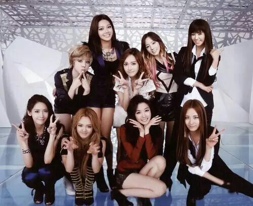

Girls´ Generation
El Grupo de la Nacion
Girls´ Generation, tambien conocidas como SNSD, son un grupo de kpop que debuto bajo SM Entertainmet en 2007 con su primer sigle Into The New World.
Formando parte de la 2da generacion, fueron bautisadas como "El Grupo de la Nacion" gracias a su gran popularidad y por inpulsar la cultura coreana. Al dia de hoy, siguen siendo uno de los grupos mas amados del genero.

Wonder Girls
El Grupo que "Pavimento" el camino del Kpop
Debutadas en 2007 bajo JYP Entertainmet con su single "Irony". Saltaron a la fama con su cancion "Tell Me" lanzada en 2008, la cancion forma parte de su primer full album "The Wonder Years". Luego de esto, fueron sumando mas popularidad con canciones como "So Hot", "Nobody", "Two Diffent Tears", entre otras. Lamnetablemente, el grupo de separo en 2015 al no renovar el contrato con su empresa.
 _3.jpg)
F(x)
Las Hijas Infravaloradas de SM
f(x) (에프엑스), que en la última parte de su carrera consistía en 4 miembros: Victoria, Amber, Luna y Krystal. f(x) debutó el 5 de septiembre de 2009 bajo la dirección de SM Entertainment. En agosto de 2015, Sulli dejó oficialmente el grupo para centrarse en su actuación. En septiembre de 2019, los contratos de Amber, Victoria y Luna con SM expiraron y decidieron no renovarlos. El 14 de octubre de 2019, el exmiembro Sulli falleció por suicidio. En octubre de 2020 se anunció que Krystal había dejado oficialmente SM. Tanto Victoria como Luna han declarado que el grupo aún no se ha disuelto.

Nine Muses
Las Diosas Sin Gloria del Kpop
(나인뮤지스) es un grupo femenino coreano bajo UNION Pictures. Debutaron como un grupo de 9 miembros el 12 de agosto de 2010 bajo la dirección de Star Empire Entertainment, con su primer sencillo "No Playboy". El 24 de febrero de 2019 se disolvieron oficialmente. En la última parte de su carrera, el grupo estaba formado por 5 miembros. Actualmente, el grupo está formado por: Moon, E U Erin, Minha, Gabin, Keumjo, Sungah, Gyeongree y Hyemi. En marzo de 2023 se anunció que 9MUSES se prepara para regresar en algún momento entre julio y agosto de 2023 como grupo completo (la formación aún está por confirmar). En agosto de 2025, se reunieron de nuevo y celebraron una reunión de fans llamada MUSE: On.

T-ara
Reinas de la 2da Gen
T-ara (티아라) es un grupo femenino formado bajo MBK Entertainment.
El grupo está formado por Qri, Eunjung, Hyomin y Jiyeon. Dejaron MBK Entertainment en 2018 y cada uno se fue a una empresa diferente para centrarse en susrespectivos horarios. T-ara debutó el 29 de julio de 2009 con su sencillo "Lies".

Kara
Pilares de la 2da Gen
KARA (카라) es un grupo femenino surcoreano de 4 miembros que debutó el 29 de marzo de 2007 bajo DSP Media. El grupo debutó originalmente con cuatro miembros: Sunghee, Nicole, Gyuri y Seungyeon, pero a lo largo de los años tuvo varios cambios en su formación. El grupo anunció su disolución el 14 de enero de 2016. El 19 de septiembre de 2022 se anunció que KARA regresaría por su 15º aniversario, incluyendo a las exintegrantes Nicole y Jiyoung.